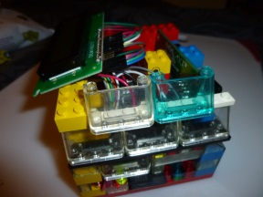
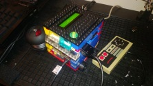
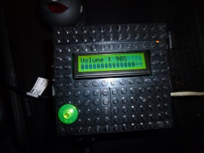

Last-Fi
Introduction
This article will introduce Last-Fi – an F# powered internet radio player that uses a Raspberry Pi and Last.Fm services. The motivation behind this work was to both build something fun and useful for the Raspberry Pi that interfaces with various pieces of hardware, but can also show off some features that F# is great at within a hardware context.
The result is Last-Fi – a highly asynchronous and stable music player. It is based around Last.Fm, but because it uses MPDto play music it only requires a few minor adjustments that will allow it to work with any music source, whilst retaining the ability to obtain artist information from Last.Fm. In terms of the hardware, you are able to control various aspects of Last.Fi with a controller from the 1980’s Nintendo Entertainment System. Various information is displayed on a 2x16 back-lit LCD display. In addition to this, the program also hosts a ServiceStack webservice, and uses FunScript, an F# to JavaScript compiler, in order to host a website that shows various information and allows direct control from any device on the same network.
I presented a talk on this work at SkillsMatter in London (here's the video), and you can find the slide deck here. The code is all open source and you can find it on GitHub here (disclaimer: this code is highly subject to change and is largely a toy project of mine)
Last-Fi illustrates an extremely powerful programming language doing some of what it does best, the entire stack from the HTTP Last.FM API, to the hardware programming and even the JavaScript is written in F# code. Not only that, it is almost all concurrent and completely immutable – I have yet to experience a single problem with any of the software. The entire project is less than 800 lines of F#. If you are new to F# be sure to check out www.fsharp.org and you can find instructions on how to get the Pi running with F# in a previous post I made here.


Hardware Elements
Last-Fi features two main hardware elements;
LCD Screen
Any standard 2x16 LCD screen compatible with the Hitachi HD44780 LCD controller is compatible with Last.Fi. The screen is used in 4-bit mode with no other additional circuitry and thus requires at least 7-8 IO pins from the Pi. The screen I am using also has a backlight, but due to running out of pins and not wanting to make the circuitry more complex, the backlight is simply connected to always be on at full brightness. A nice addition to control the backlight would be some form of hardware pulse width modulation circuit. The contrast of the screen is simply always at full contrast, this is just because having a potentiometer for this purpose was difficult to fit in the case, and in this instance the screen I am using looks best at full contrast anyway.
In terms of the software, you can read more about how the screens are controlled in a previous post. The code has evolved a fair bit since then but the basic principles are the same. A F# MailboxProcessor (henceforth known as an Agent) is employed within a standard .NET type to enable async execution and manage state whilst providing safe synchronization mechanics. The agent accepts two messages, ScrollText and TemporaryText. The former will cause the screen to display and scroll where necessary the two lines of text supplied in the message. The scrolling happens all asynchronously in an isolated environment that has no affect on the rest of the system. The latter message will cause the supplied text to appear on the LCD temporarily, and after a timeout period will revert back to scrolling whatever state was present before.
This code illustrates how we can create a self-contained asynchronous and isolated system that is packaged in a re-useable object. It demonstrates how we can propagate state using an F# Agent, and how to use TryReceive() to provide both scrolling and temporary text timing, whilst providing the ability to quickly override messages. This is useful in various situations, such as holding “up” on the NES pad will allow the volume to repeatedly increase without waiting for the previous temporary text that shows the volume to time out.

NES Pad
The Nintendo pad is essentially just an 8 bit parallel to serial shift register. Indeed, if you look inside one you will find a single chip which is exactly that. The pad is used to skip tracks, adjust the volume, start / play / pause the music. In order to use the NES pad, its internal shift register is hooked up to some of the Pi’s pins, and then at some specified polling interval, the state of the buttons are shifted in where something can happen to them. Once again this is a very concurrent operation where a requirement is to poll at certain intervals, and therefore another Agent is used packaged up in a .NET type thus providing the reusable, isolated asynchronous object similar to the LCD.
For the NES object to be of any use, it requires some state. It needs to know what the button state was previously in order to determine what has changed in the current iteration. Once again the Agent forms the basis of this by propagating a state through each loop cycle that contains both the “current” state of the buttons and a list of buttons that were pressed in the past.
With this information, the object is able to raise .NET events such as ButtonDown and ButtonUp that a subscriber can listen to. Using F#’s powerful active patterns the caller can also quite easily indicate it is interested in a more complicated pattern of buttons. In conjunction with this another F# feature is used – first class .NET events. This means you can create an event in code and the register it with some pattern match based on button history and state. In this way is is simple to create your own event that fires when Start and Select have both been pressed for 3 seconds, or to fire when the button history matches the Konami Code, for example.
1 2 3 4 5 6 7 8 9 10 11 12 13 14 15 16 17 18 19 20 21 22 23 24 25 26 27 |
let startSelectEvent = Event<unit>() startSelectEvent.Publish.Add(fun _ -> printfn "start select!!") let konamiCodeEvent = Event<unit>() konamiCodeEvent.Publish.Add(fun _ -> printfn "Konami Code!!!" let aux = async { for i = 1 to 5 do // this will cause the message to flash 5 times (exciting!!) lcd.TemporaryText("Konami Code!","") do! Async.Sleep(750) lcd.TemporaryText("","") do! Async.Sleep(750) return () } Async.Start aux ) nes.AddCustomEvent((fun data -> match data with | NES.ButtonDown NES.Button.START length1 & NES.ButtonDown NES.Button.SELECT length2 when length2 > 3000.0 && length1 > 3000.0 -> true | _ -> false), startSelectEvent) nes.AddCustomEvent((function | NES.ButtonSequence [NES.Button.UP;NES.Button.UP;NES.Button.DOWN;NES.Button.DOWN; NES.Button.LEFT;NES.Button.RIGHT;NES.Button.LEFT;NES.Button.RIGHT; NES.Button.B;NES.Button.A] () -> true | _ -> false),konamiCodeEvent) |
Other Software
MPC / MPD
This is the Linux daemon used to actually play music. MPC is a command line interface to MPD. Critically, MPC supports a command called “idle” which will block the current thread until something in the the daemon happens, at which point the program returns some text to indicate a change has happened. The core Player object (discussed shortly) uses this in order to tell the LCD what to display, and when to load new tracks. However, ideally this operation wouldn’t actually block and this is where F#’s async workflows once again come in very useful – it’s trivial to wrap the MPC idle command in a async workflow and then be able to use it elsewhere without blocking.
Last.Fm API
In order to use the Last.FM API, HTTP POST messages are manually crafted and encrypted. Thanks to F#’s extremely succinct record types and higher-order functions, this is able to be achieved in a very small amount of code.
Player
This object is what connects to Last.Fm via the API, retrieves and queues track URLs to MPC, and provides the music interface to the rest of the program. Once again, this is a F# agent running an async loop propagating state. You might think this is overkill, but this object has to respond to commands both from the webservice, and from the NES pad, so the Agent nicely handles any sync problem.
Core
The core program itself uses ServiceStack to host a webservice that allows operations via an instance of the Player object. The program initializes the various objects, hooks up various events between the objects and then sits there doing nothing perpetually 
Website
As mentioned before, the website is created by using a F# to JavaScript compiler, FunScript. FunsScript is also a mini web server which means I can avoid using XSP or another ASP.NET equivalent. FunScript also makes use of F# type providers to bring in TypeScript definition files, which essentially annotate populate JavaScript libraries with type information. Using this you can basically bring any JavaScript library directly into the F# programming language. Pretty cool I say!